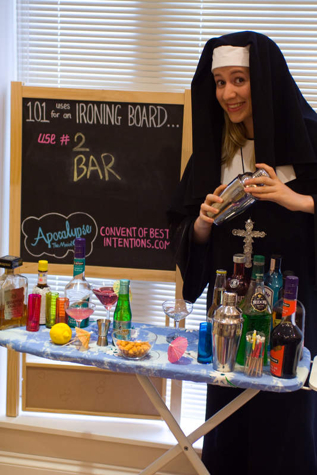

Hello Dears!
I'm Mother Hildegard at the Convent of Best Intentions.
Thanks for coming to visit us on the internets at our housepage!
Here you can meet the nuns, ask us any questions you fancy, find out what we got up to in Edinburgh 2008 and keep track of our ongoing mission to find 101 uses for an ironing board.
Well, I've got to say how exciting this all is. Sister Josie has been up all hours on the internets making us this wonderful housepage and I feel truly blessed that we can take the Convent of Best Intentions forward into the 21st Century!
It just shows how adaptable us nuns really are. And talking of adaptable, we're really excited about our mission to find 101 USES FOR AN IRONING BOARD! You can't find out more about that on our 101 Uses of an Ironing Board Page. Josie says that's obvious and that I shouldn't say that and I should stop typing and oh- I see.
Well, I'd best be off, dears, but in the meantime you can busy yourself by having a look around our websight. This technology really is exciting. Do get in touch if you have any questions- we're always keen to make new friends!
Take care and be good,
Mother Hildegard, Convent of Best Intentions
Here's something you can do with an ironing board:
